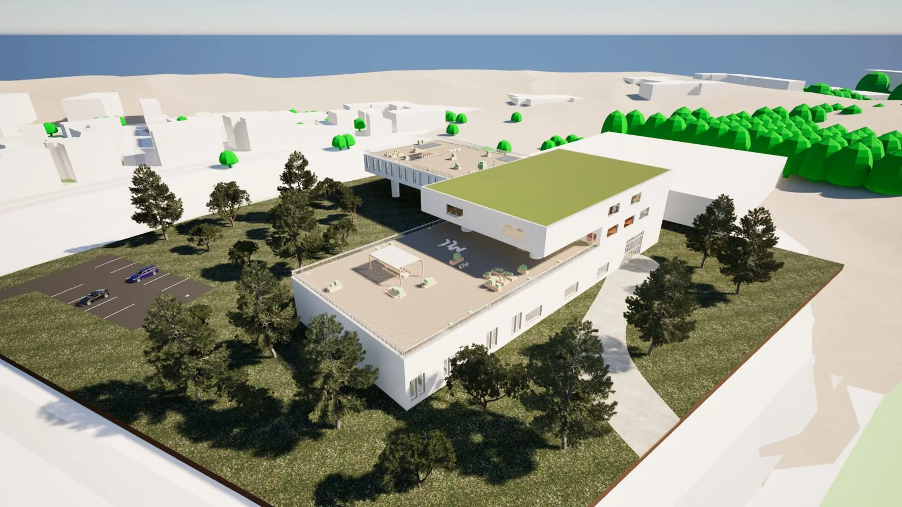
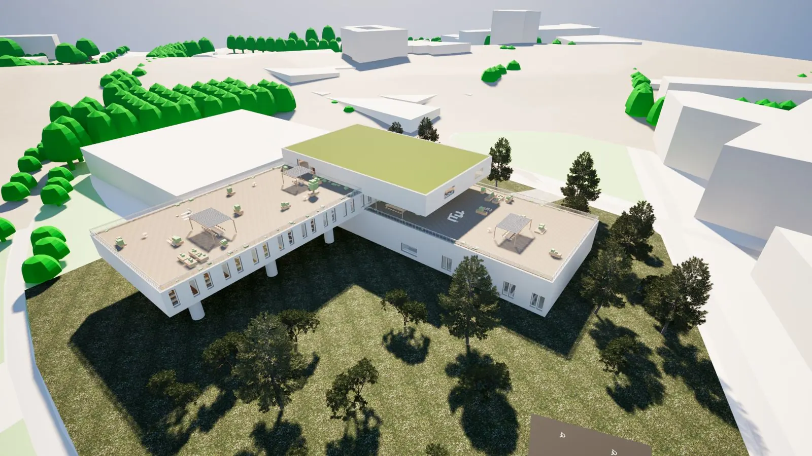
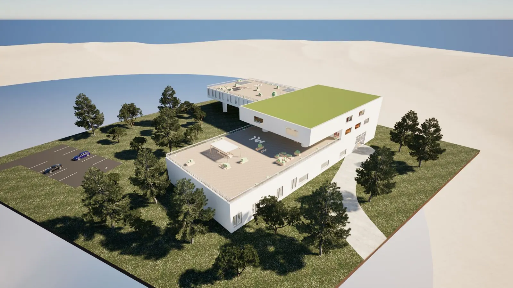
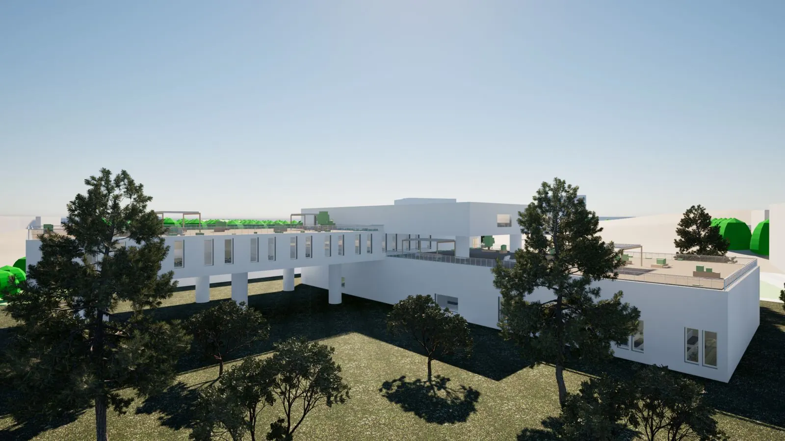
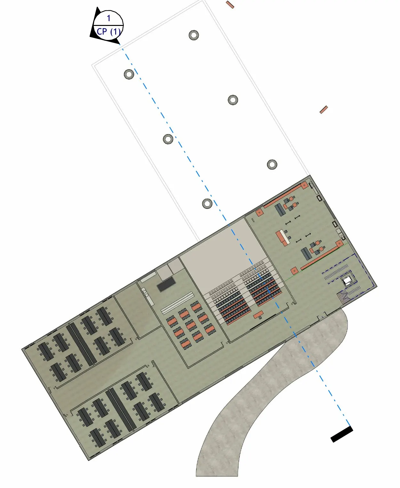
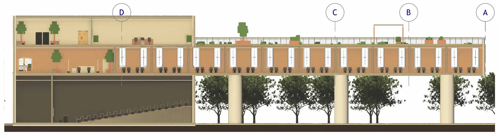

Concours CO2ST.io
Un établissement scolaire bas carbone conçu en une journée et défendu le lendemain devant un jury. Cinq étudiants, une maquette, et une deuxième place au bout.

Le concours Concevoir vite, chiffrer le carbone
Le sujet tombe le 23 novembre à 9 h : concevoir un établissement scolaire bas carbone sur un site de la presqu'île de Caen, en tenant compte des vagues de chaleur, de l'intégration urbaine, du coût et de l'impact carbone évalué avec l'outil CO2ST.io. Les livrables sont à déposer le soir même à 20 h, la soutenance a lieu le lendemain matin.
On était cinq : Jeanne, Baptiste, Grégoire et moi en TC5, et Lola en TC3. Au classement final, on termine deuxièmes.
Le projet Trois volumes décalés
Plutôt qu'une barre unique, on a travaillé le bâtiment en blocs superposés et décalés. Un socle en rez-de-chaussée regroupe l'accueil, l'administration, les salles d'enseignement et un amphithéâtre en gradins. Au R+1, une aile de salles de classe distribuées par un couloir central part en porte-à-faux sur pilotis, ce qui libère le sol et garde les arbres du site. Le dernier volume, au R+2, est décalé par rapport au socle et coiffé d'une toiture végétalisée.
Les toitures-terrasses du socle et de l'aile ne sont pas laissées nues : elles deviennent la cour de l'établissement, orientée à l'ouest, aménagée avec des pergolas, des assises et des zones de travail en extérieur. Les porte-à-faux et les pergolas apportent de l'ombre aux façades et aux espaces extérieurs, ce qui répond directement au critère des vagues de chaleur.
Le bas carbone Un nouvel outil : CO2ST.io
Tout le concours tourne autour de CO2ST.io, un outil que l'on découvrait le jour même. Il ne part pas d'une maquette : on lui décrit le bâtiment à partir de sa trame (portées, travées, nombre de niveaux, systèmes constructifs) et il en sort une estimation de l'impact carbone et du coût. Ça permet de comparer plusieurs variantes en quelques minutes, au stade esquisse, là où d'habitude ce genre de bilan n'arrive qu'une fois le projet bien avancé.
On s'en est servi comme d'un outil de conception et pas seulement de vérification : la trame, la répartition des volumes et les choix constructifs ont été ajustés au fil des simulations pour faire baisser le bilan. Le reste du parti va dans le même sens : conserver les arbres existants en libérant le sol sous l'aile sur pilotis, végétaliser la toiture du dernier volume, et protéger les façades et la cour par les porte-à-faux et les pergolas plutôt que par des équipements de climatisation.
Mon rôle Toute la maquette
- Modélisation complète sous Revit. Trame structurelle (axes A à D et 1 à 6), poteaux, planchers, murs, menuiseries, amphithéâtre, mobilier et aménagement des terrasses, le tout en une journée.
- Implantation sur le site. Calage du projet sur la parcelle, accès piéton, stationnement et végétation conservée.
- Production des planches. Cartouche du projet, plan de masse, plans du RDC au toit, coupes sur la trame : huit planches A3 cohérentes, sorties directement de la maquette.
- Visuels de soutenance. Vues aériennes, vue depuis le jardin et vidéo de visite pour présenter le projet au jury.
En images Rendus, plan et coupe





Vidéo Visite de la maquette
En raison des limitations du site, la qualité a été réduite pour assurer la compatibilité.
Bilan
Ce que j'en retiens
En une journée, on n'a pas le temps de remodéliser : il faut une maquette propre dès le départ, avec une trame posée tôt et des vues préparées pour les planches. C'est ce qui nous a permis de rendre un dossier complet à 20 h pendant que le reste de l'équipe faisait tourner les simulations CO2ST.io et préparait la soutenance.